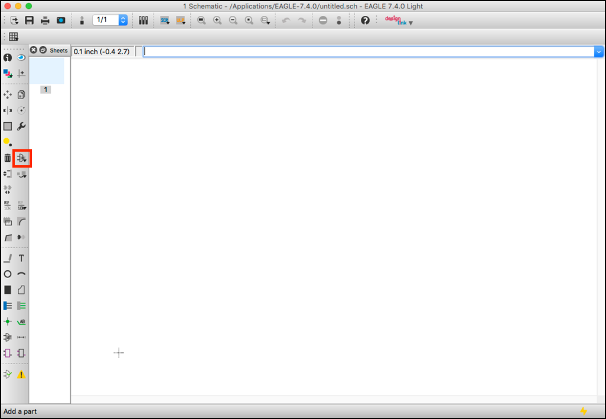
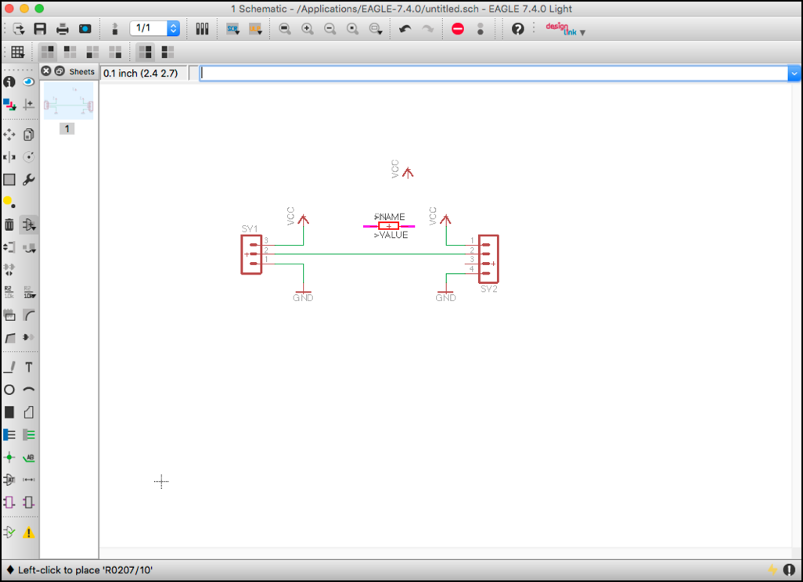

Skip to content
FaBo Circuit Docs
湿度/温度DHT11
検索キーワードを入力してください
FaBo Circuit Docs
FaBo Circuit Docs
0.Arduino Bootloader
0.Arduino Bootloader
0.1 事前準備
0.2 マイコンへの書込み
1.Arduino Breadboard
1.Arduino Breadboard
1.1 事前準備
1.2 5Vへの電圧変換
1.3 ICの接続
1.4 水晶発信子の接続
1.5 LEDの接続
1.6 リセットスイッチの実装
1.7 USBシリアル変換モジュールの接続
1.8 マイコンへの書込み
2.Arduino Eagle
2.Arduino Eagle
環境設定
レイアウト
発注用データ作成
下地の配置
レギュレータ、DCジャックの配置
ICの配置
水晶発信子の配置
配線
LEDの配置
リセット機能
USBシリアル変換アダプタの配置
Pcb
Pcb
下地の配置
水晶発信子の配置
配線
ICの配置
回路図の新規作成
レギュレータ、DCジャックの配置
環境設定
Sensor
Sensor
(加速度)ADXL345(I2C)
湿度/温度センサー AM2321
湿度/温度DHT11
湿度/温度DHT11
目次
端子の追加
DHT111用の端子の追加
VCCの追加
GNDの追加
通信線の追加
レイアウトの作成
テキストの追加
(加速度)isl29034(I2C)
Lab01
Lab02
LEDの回路
照度の回路
MPL115
Voltera
Voltera
VolteraでFaBo Brickを設計
Color LED Brickの作成
Temperature Brcikの作成
LED Brickの作成
回路図の新規作成
環境設定
Temperature Brcikの作成
目次
端子の追加
DHT111用の端子の追加
VCCの追加
GNDの追加
通信線の追加
レイアウトの作成
テキストの追加
湿度/温度DHT11
端子の追加

DHT111用の端子の追加
VCCの追加
GNDの追加
通信線の追加

レイアウトの作成
テキストの追加